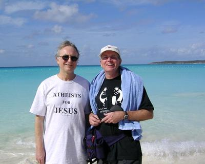

Este texto fue publicado inicialmente el el blog La Media Hostia de Ismael Vallodolid, quien tradujo este texto al castellano.
El argumento, como una buena receta, tiene que ser cocinado despacio y con los ingredientes bien calculados de antemano. De momento, el título, un aparente oxímoron. En una sociedad donde la mayoría de los teístas son al menos declaradamente cristianos, las dos palabras son tratadas como sinónimos. La memorable reclamación del ateísmo de Bertrand Russell recibía el título de Por qué no soy cristiano en lugar del probablemente más adecuado Por qué no soy teísta. Todos los cristianos son teístas, esto no es necesario aclararlo.
Por supuesto Jesús era teísta, pero esto es lo menos interesante que puede decirse sobre él. Era teísta porque en su tiempo todo el mundo lo era. El ateísmo no era una alternativa, incluso para alguien de pensamiento tan radical como Jesús. Lo interesante y remarcable de Jesús no era el hecho obvio de que creyese en el Dios de su religión judía, sino que se rebeló contra muchos de los aspectos incómodamente vengativos de su Yavé. Al menos en las enseñanzas que se le atribuyen, Jesús se demostraba partidario de la bondad, y fue en realidad uno de los primeros en hacerlo. Para todos los familiarizados con las crueldades tan a la manera de la Sharia que se cuentan en el Levítico o en el Deuteronomio, para todos los crecidos temiendo al Dios Ayatollah vengativo de Isaac y Abraham, el joven y carismático predicador que promovía el perdon generoso les habría parecido radical hasta la subversión. No resulta prodigioso que le crucificaran.
«Oísteis que fue dicho a los antiguos: Ojo por ojo, y diente por diente. Más yo os digo: No resistáis al mal; antes a cualquiera que te hiriere en tu mejilla diestra, vuélvele también la otra; Y al que quisiere ponerte á pleito y tomarte tu ropa, déjale también la capa. Y a cualquiera que te cargare por una milla, ve con él dos. Al que te pidiere, dale; y al que quisiere tomar de ti prestado, no se lo rehúses.»
—Mateo 5:38
Mi segundo ingrediente es otra paradoja que tiene origen en mi campo, el darwinismo. La selección natural es un proceso profundamente molesto, como el propio Darwin se encargó de remarcar.
«¿Qué libro escribiría un capellán del diablo sobre el trabajo torpe, derrochador, primitivo y horriblemente cruel de la naturaleza?»
—Charles Darwin
No son sólo los hechos naturales, entre los que destacó el hábito de las larvas del meloncillo de alimentarse de cuerpos de orugas vivas. La propia teoría de la selección natural parece calculada para fomentar el egoísmo a expensas del bien público, la violencia, la calculada indiferencia al sufrimiento, la codicia a corto plazo a expensas de las previsiones a largo. Si las teorías cientificas pudiesen votar, la evolución con seguridad votaría republicano. Mi paradoja viene del hecho tan enfrentado al darwinismo, y que todos podemos comprobar entre nuestros seres cercanos, de que la mayoría de la gente es amable, generosa, compasiva, deseosa de ayudar. Buena. El tipo de persona de la que decimos «es un santo» o «es el buen samaritano».
El darwinista puede forjar explicaciones a la amabilidad humana, generalizaciones de los bien establecidos modelos de selección de clase y altruismo recíprico. El resultado benéfico de la teoría del gen egoísta, que pretende explicar cómo el altruismo y la cooperación entre animales individuales puede derivarse del comportamiento egoísta a nivel genético. Pero el tipo de gran amabilidad en humanos de la que hablo va mucho más allá. Es una auténtica perversión de cómo interpreta Darwin la bondad. Y si es una perversión, es justo el tipo de perversión que debemos promover y difundir.
Es una perversión del darwinismo porque en una población salvaje sería eliminada de inmediato por la selección natural. Es también, aunque no tenga espacio para entrar en detalles sobre este tercer ingrediente de mi receta, una perversión adicional a ese tipo de teorías racionales de la elección con la que los economistas explican el comportamiento humano como uno calculado para maximizar el beneficio propio.
Digámoslo más rotundamente. Desde un punto de vista darwinista, o meramente racional, la bondad en el ser humano es una simple idiotez. De nuevo, es justo el tipo de idiotez que debemos promover, y ese es el propósito de mi artículo. ¿Cómo lo hacemos? ¿Cómo partimos de esa minoría de seres humanos amables a los que cada uno conoce e incrementamos su número, idealmente hasta que se conviertan en una mayoría de la población? ¿Podemos inducir a que la bondad se difunda como una epidemia? ¿Podemos empaquetarla de forma que se transmita por las futuras generaciones en una propagación vertical?
¿Tenemos algún ejemplo comparable, donde las ideas estúpidas hayan conseguido propagarse como una epidemia? Sí, por Dios. La religión. Las creencias religiosas son irracionables. Son entre idiotas y muy idiotas. Superidiotas. La religión lleva a gente en cualquier caso sensata al celibato en monasterios. O a estrellarse a sí mismo contra un edificio en New York. La religión motiva a la gente a flagelarse la espalda, o a prenderse fuego a ellos mismos o a sus hijas, a denunciar que sus abuelas son brujas o, en casos menos extremos, a permanecer arrodillados semana tras semana durante ceremonias estupefacientemente aburridas. Si es posible infectar a la gente con un tipo de estupidez tan dañina, infectarles con bondad debería ser un juego de niños.
Las creencias religiosas, desde luego, se difunden como epidemias y, de manera más obvia, pasan de generación en generación como tradiciones verticales y promueven comportamientos de irracionalidad peculiar. Podríamos no entender por qué los seres humanos se comportan de esa grotesca manera que llamamos religión, pero es un hecho que lo hacen. La existencia de la religión es una evidencia de que los seres humanos gustosamente adoptan creencias irracionales y las difunden, verticalmente en tradiciones pero también horizontalmente en epidemias evangelizadoras. ¿Puede esta susceptibilidad, esta palpable vulnerabilidad a la irracionalidad infecciosa, ser utilizada para un buen uso genuino?
Los humanos tenemos una fuerte tendencia a aprender de y a copiar a nuestros admirados modelos de comportamiento. Bajo las circunstancias adecuadas, las consecuencias epidémicas pueden ser dramáticas. Ya sea el corte de pelo de un futbolista, cómo se viste un cantante, los manierismos del presentador de televisión, todas son idiosincrasias triviales que se difunden a través de la población de una época como un virus. La industria publicitaria se dedica profesionalmente a la ciencia —o debería escribir arte— de lanzar epidemias meméticas y alimentar su crecimiento. El cristianismo en sí mismo fue difundido por los antecesores de la disciplina, originalmente San Pablo y posteriores clérigos y misionarios quienes consiguieron sistemáticamente incrementar el número de conversos a un ratio exponencial. ¿Podemos conseguir esa amplificación exponencial en el número de gente buena?
Esta semana tuve una charla pública en Edinburgo con Richard Holloway, antiguo obispo de esa bella ciudad. Holloway evidentemente supera el naturalismo que aún la mayor parte de los cristianos identifican con su religión. Se describe a sí mismo como un post-cristiano, o un «cristiano recuperado». Conserva su reverencia hacia la poesía de los mitos religiosos, algo suficiente para hacerle volver a la Iglesia cada semana. Durante nuestra discusión hizo una sugerencia que va al núcleo de lo que explico. Tomando prestado un mito poético del mundo de las matemáticas y la cosmología, describió a la humanidad como una «singularidad evolutiva». Quería decir exactamente lo mismo que intento yo en este ensayo, aunque lo hizo de forma diferente. La llegada de la bondad humana es algo sin precedentes en los miles de millones de años de historia evolutiva. Es probable que después de la singularidad que supone la aparición del homo sapiens, la evolución ya nunca vuelva a ser lo mismo.
{kind=link}
No te ilusiones, igual que Holloway no lo hacía. La singularidad es un producto de la propia evolución ciega, no la creación de inteligencia alguna. Resulta de la evolución el hecho de que el cerebro humano, por las fuerzas de la selección natural, se haya expandido hasta un punto en el que, inesperadamente, se spuera a sí mismo y empieza a comportarse de manera insana desde el punto de vista de su propio gen egoísta. Esto resulta transparente si piensas en lo completamente antidarwiniano que resulta el uso de preservativos, separando el placer sexual de su función natural como propagador de genes. Menos obvio resulta pensar en la persecución artística o intelectual, desperdicio de un tiempo y energía que deberían estar siendo empleados en sobrevivir y reproducirse. Nuestro gran cerebro alcanza la capacidad sin precedentes evolutivos de predecir, de forma genuina, consecuencias a largo plazo distintas de las egoístas ganancias a corto. Al menos en algunos individuos, el cerebro se sobrepasa a sí mismo hasta el punto de comprometerse con la bondad, esa cuya existencia singular es la paradoja central de mi tesis. El gran cerebro humano se salta los mecanismos hacia la consecución de objetivos originalmente al servicio del gen egoísta y los divierte, o subvierte, o pervierte, desde el cometido darwiniano hacia otras tareas.
No soy ingeniero memético y tengo poca idea sobre cómo incrementar el número de seres humanos buenos y difundir ese meme por toda la pecera. Lo mejor que puedo hacer es ofrecer un eslogan molón. «Ateos por Jesús» queda bien en una camiseta. No hay un motivo evidente para elegir a Jesús como icono en lugar de otros grandes bondadosos de la historia como Mahatma Gandhi —la odiosa Madre Teresa no, por el amor de los cielos—. Creo que le debemos a Jesús el honor de haber separado su ética radical y original del sinsentido sobrenatural que inevitablemente le haría un hombre de su tiempo. Creo que el impacto oximorónico de ese «Ateos por Jesús» puede ser justo lo que necesitamos para iniciar la carrera hacia una sociedad post-cristiana necesariamente buena. Si jugamos bien nuestras cartas, puede que consigamos alejar a la sociedad de las tenebrosas regiones de su origen darwiniano hacia una nueva época amable y compasiva, más allá de la singularidad hacia un nuevo Siglo de las Luces.
Creo que si Jesús volviese a nacer vestiría esta camiseta. Resulta un lugar común suponer que si volviese hoy, se asombraría de lo que hacen en su nombre. Desde la Iglesia Católica hasta los fundamentalistas de la derecha religiosa. Es menos obvio pero aún plausible que a la vista del conocimiento científico actual, dejase de lado el oscurantismo sobrenatural. Probablemente su modestia le obligaría a darle la vuelta a la camiseta. Jesús para los ateos.
Richard Dawkins es biólogo evolutivo, nació en Nairobi, Kenya, en 1941 y se educó en la Universidad de Oxford. Comenzó su carrera como investigador en los 60, estudiando bajo la dirección del etólogo Nico Tinbergen, ganador del premio Nóbel, y desde entonces su trabajo ha girado en torno a la evolución del comportamiento. Ha obtenido las cátedras Gifford de la Universidad de Glasgow y Sidwich del Newham College de Cambridge. Además ha sido profesor de zoología de las universidades de Oxford y California, ha presentado programas de la BBC y dirigido varias publicaciones científicas. En 1995 se convirtió en el primer titular de la recién creada cátedra Charles Simony de Divulgación Científica en la Universidad de Oxford. Autor de obras muy leídas como:
El gen egoísta (1976; segunda edición, 1989; tercera, 2006)
El fenotipo extendido (1982)
El relojero ciego
El río del Edén (1995)
Escalando el monte improbable (1996)
Destejiendo el arco iris (1998) — Dawkins, con ironía pero también con rigor científico, se enfrenta a las pseudociencias mostrando lo que son: fraude, ilusión, alucinación, error o embuste.
El capellán del diablo (2003)
The Ancestor’s Tale: A Pilgrimage to the Dawn of Evolution (2004); El cuento del antepasado: un viaje a los albores de la evolución (2008)
The God Delusion (2006); El espejismo de Dios (2007)
The Greatest Show on Earth: The Evidence for Evolution (2009) (Evolución. El mayor espectáculo sobre la Tierra)
Volver a Simplemente ateísmo
Comentarios
Comments powered by Disqus